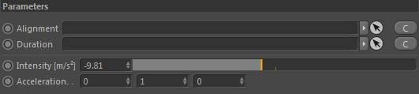

Parameters
Parameters

Alignment
Takes a node of type 'Alignment' to define the direction of the emitted force. This node is optional.
An alignment node allows more complex directions to be created. If you want to create a simple attractor force for example you
would use an Alignment node here with an inverted spherical direction.
Duration
Takes a Duration node in order to define the length of the force emission. This node is optional.
Intensity [m/s²]
The strength of the resulting directional acceleration force (so the length of the emitted vector). Higher values result in more intense motions.
By default the earth's gravity of 9.81m/s² is used.
Acceleration
The direction of acceleration. Only used when no Alignment node is linked.